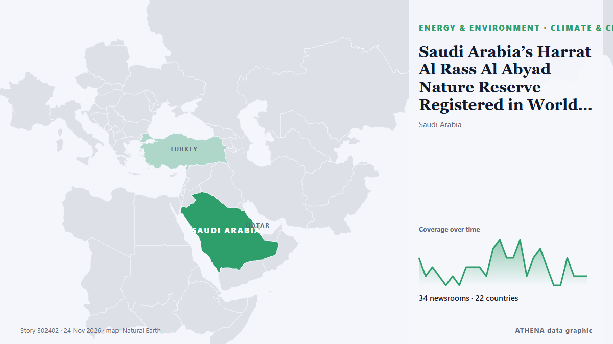

Saudi Arabia’s Harrat Al Rass Al Abyad Nature Reserve Registered in World Database on Protected Areas

The Public Investment Fund is distracted, and not just by war. from The Economist - Finance & economics
What changed 28 new reports from 21 outlets in the last 24 hours.
See the sources ›Evidence: Limited
Reported independently by 36 outlets in 22 countries since 22 Nov, first by News of Bahrain; coverage is at its peak. ATHENA rates the risk moderate (2.6/10), driven mainly by the severity of the harm described and its geographic and sector reach. Confidence is 64% (moderate), with 36 independent outlets corroborating it and an average source reliability of 73%. Outlets by country: Saudi Arabia (11), United States (5), United Kingdom (3). Coverage: 22 Nov to 24 Nov, 51 hours.
Why it matters: Energy and resource developments affect fuel and power prices, supply security and climate commitments.
What changed: 28 new reports from 21 outlets in the 24 hours to 24 Nov.
First reported as: Saudi–Qatar travellers get free fuel and eSIM
AutomatedSelected, grouped and scored by ATHENA's published method from 29 independent outlets. The headline is the outlet's own; ATHENA's sentences follow fixed patterns - no generative AI writes them. How it works →
How to read this page
- What you are reading
- 36 outlets in 22 countries reported this event. The reports below are listed in the order they appeared; each headline opens the original article. ATHENA writes none of the reports.
- Our reading
- For the record — The reports describe a completed, domestic, commercial or personal matter. We list it so you can see who reported it and when. We are not tracking a risk of wider conflict here.
- How much evidence
- Limited Treat this page as an early report.
After repeats, off-topic items and stale reports are removed, 9 of the 40 listed reports are counted; 42% of the headlines match the event.
- What this does not mean
- ATHENA measures how an event is reported, not whether it is true. This is not a forecast, a judgement on who is right, or advice.
- What would change it
- Reports from other independent outlets showing a different development, or a firm confirmation or denial from an official source.
Reading R2 · refreshed with every update of this page. ATHENA has not yet published a track record for these readings; when it does, it will be linked here.
At a glance
Selected, scored and written by ATHENA's published methodology. No editor intervenes in individual events. How this is produced ›
| 22 Nov 08:01 UTC | 3 |
|---|---|
| 22 Nov 10:01 UTC | 1 |
| 22 Nov 12:01 UTC | 2 |
| 22 Nov 14:01 UTC | 1 |
| 22 Nov 16:01 UTC | 0 |
| 22 Nov 18:01 UTC | 1 |
| 22 Nov 20:01 UTC | 0 |
| 22 Nov 22:01 UTC | 2 |
| 23 Nov 00:01 UTC | 2 |
| 23 Nov 02:01 UTC | 2 |
| 23 Nov 04:01 UTC | 1 |
| 23 Nov 06:01 UTC | 4 |
| 23 Nov 08:01 UTC | 5 |
| 23 Nov 10:01 UTC | 3 |
| 23 Nov 12:01 UTC | 3 |
| 23 Nov 14:01 UTC | 5 |
| 23 Nov 16:01 UTC | 1 |
| 23 Nov 18:01 UTC | 3 |
| 23 Nov 20:01 UTC | 4 |
| 23 Nov 22:01 UTC | 2 |
| 24 Nov 00:01 UTC | 1 |
| 24 Nov 02:01 UTC | 0 |
| 24 Nov 04:01 UTC | 4 |
| 24 Nov 06:01 UTC | 1 |
| 24 Nov 08:01 UTC | 2 |
| 24 Nov 10:01 UTC | 1 |
Why these numbers
Importance
How widely and how prominently the story is reported.
Risk
What the reports describe, scored for possible harm. It is not a forecast.
Confidence
How well independent outlets support the story.
Shown as 64% (calculated 89%): the evidence reading is Limited, so confidence is held at moderate.
The reporting — who reported it, and when
headline as published · opens the original- News of Bahrain · BahrainSaudi–Qatar travellers get free fuel and eSIM
- Arab News · Saudi ArabiaManufacturing, mining drive 12% rise in Saudi operating revenues: GASTAT
- Hürriyet Daily News · TurkeyAntalya’s COP31 turtle pavilion to become nursery
- The Economist - Finance & economics · United KingdomSaudi Arabia’s $1trn wealth pot suffers an identity crisis
- Arab News · Saudi ArabiaSaudi Arabia achieves 89% 5G population coverage in H1
- Arab News · Saudi ArabiaClosing Bell: Saudi main index slips to close at 9,960
- Arab News · Saudi ArabiaSaudi digital government chief outlines progress at 38th Government Press Conference
- MyJoyOnline · GhanaDr Zanetor Agyeman-Rawlings protests ‘disrespect’ at COP31 as summit president apologises
- Premium Times · NigeriaCOP31: Nigeria absent at closing plenary
- Guardian Environment · United KingdomThe good news out of Cop31? That most of the world’s governments said no to an agreement stripped of meaning | Bill Hare
- Vanguard · NigeriaCOP31: Onuigbo tasks legislators on climate laws, funding
- Health Policy Watch · SwitzerlandCOP31 Climate Summit that Could Not Say ‘Fossil Fuels’ Ends with No Deal
- Trinidad Express · Trinidad and TobagoStaying safe in an uncertain digital world
- 24.kg (English) · KyrgyzstanSpeaker of Saudi Arabia's Shura Council arrives in Kyrgyzstan
- NDTV World · India"Oil States Hijacked COP31": Countries Blame Saudi For Failed Talks
- The Business Standard (Bangladesh) (working feed) · BangladeshSaudi Arabia's influence loomed large over failed COP31 deal
- Asharq Al-Awsat (English) · Saudi ArabiaSaudi Arabia Seeks to Strengthen Resilience of Digital Services Against Risks
- The Diplomat · JapanDespite COP31’s Disappointments, There Are Reasons to Be Optimistic About Climate Progress
- News Diggers · ZambiaArrax Energies blames Zesco for failed K3.8M fuel deal
- Premium Times · NigeriaHow African negotiators confronted COP31 president over ‘disrespect’
- Rigzone · United StatesCOP Crumbles as Oil Nations Reject Fossil Fuel Language
- Asharq Al-Awsat (English) · Saudi ArabiaSaudi Arabia’s Operating Revenue Index Climbs 12.2% in September
- Offshore Engineer · United StatesSaudi Arabia's Fossil Fuel Stance at Center of COP31 Collapse
- APA (English) · AzerbaijanChairman: Our goal is to make digital services more proactive
- AllAfrica · AFREthiopia: COP31 Ends in Deadlock, Leaving Ethiopia to Pick Up the Pieces
- Arab News · Saudi ArabiaQatar’s inward FDI climbs as country targets $100bn by 2030
- Arab News · Saudi ArabiaSaudi construction costs rise 2.3% in October: GASTAT
- Kun.uz (English) · UzbekistanCOP31 ends without agreement as countries clash over fossil fuels
- Arab News · Saudi ArabiaSaudi designer Mohammed Sultan steps out with jazz-inspired After Dark collection
- Democracy Now! · United States"A Shameful Failure": U.N. Climate Summit Collapses as Final Text Drops Mention of Fossil Fuels
- Arab News · Saudi ArabiaClosing Bell: Saudi main index slips to close at 9,937
- Express Tribune · PakistanClimate failure
- The Straits Times · SingaporeSaudi Arabia accused of playing spoiler after COP31 failure
- France 24 English · FranceBehind COP31 failure: A showdown over fossil fuel interests
- IndieWire · United StatesJane Fonda on Documentary ‘Gaslit,’ Trump, and What the Democrats’ Midterm Victory Means for Climate Change
- Guardian Environment · United KingdomBen Jennings on the failure of Cop31 – cartoon
- SBS News · AustraliaPacific nations forge new climate alliances after COP31 collapse
- RNZ Pacific · PACGreen Overseas Programme looks to improve climate finance and resilience for Pacific territories
- CleanTechnica · United StatesCOP 31 Plants A Big Wet Kiss On Failed Carbon Capture Technology
- Asharq Al-Awsat (English) · Saudi ArabiaSaudi Arabia’s Harrat Al Rass Al Abyad Nature Reserve Registered in World Database on Protected Areas